Challenge 1
Nhìn hình và chọn từ/cụm từ đúng.
Người lớn: nguồn/ghi chú
👤 *(phần đầu)*
Đáp án giáo viên xem trong bài nguồn, không hiển thị trước cho bé.
Ảnh WebP nhẹ, không có nhãn đáp án trong bitmap. Câu hỏi và lựa chọn nằm riêng. Audio Challenge do chủ dự án bổ sung; hiện có thể nhờ người lớn đọc từ bài nguồn.
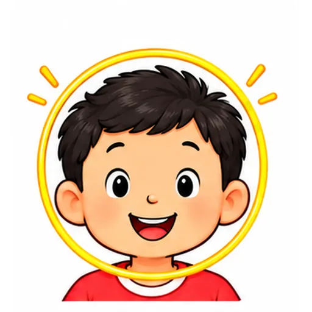
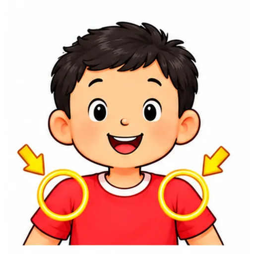
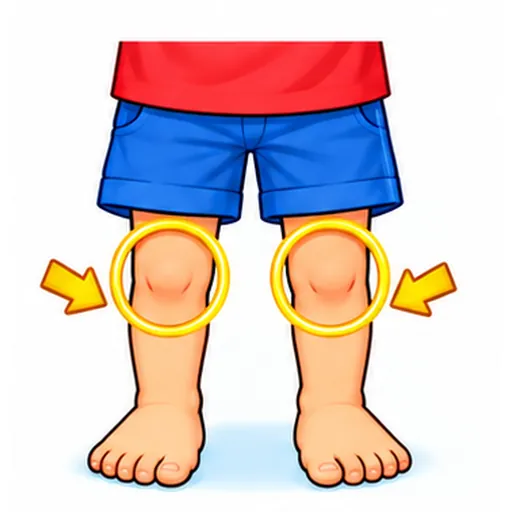
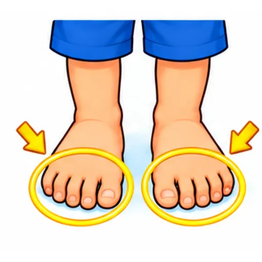
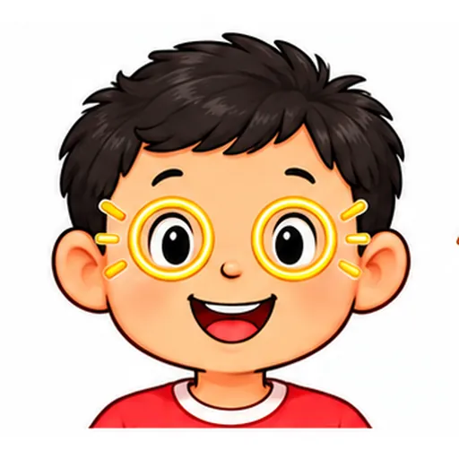
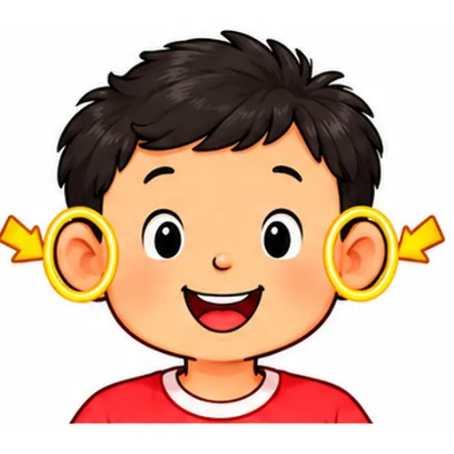
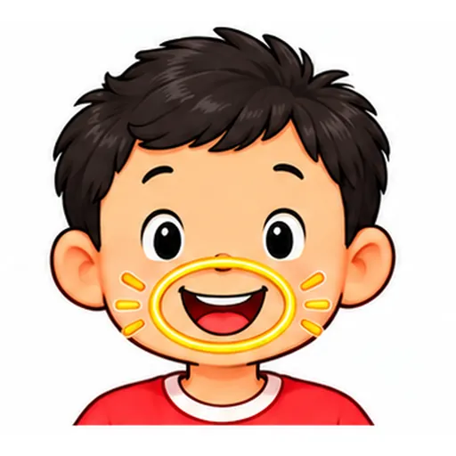
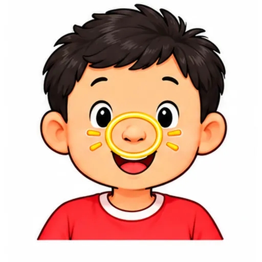
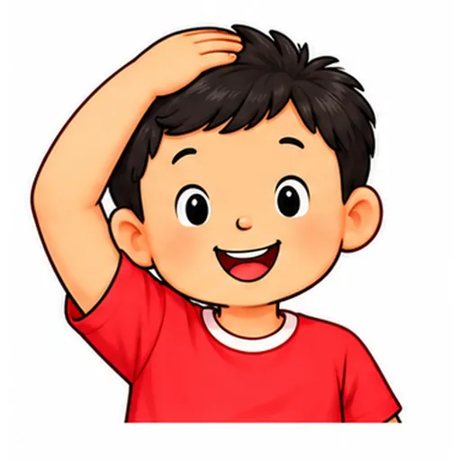
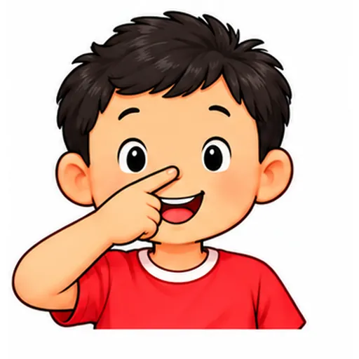
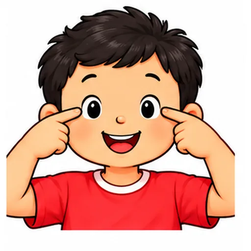
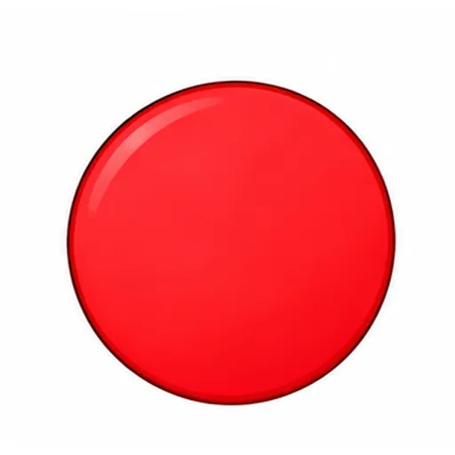
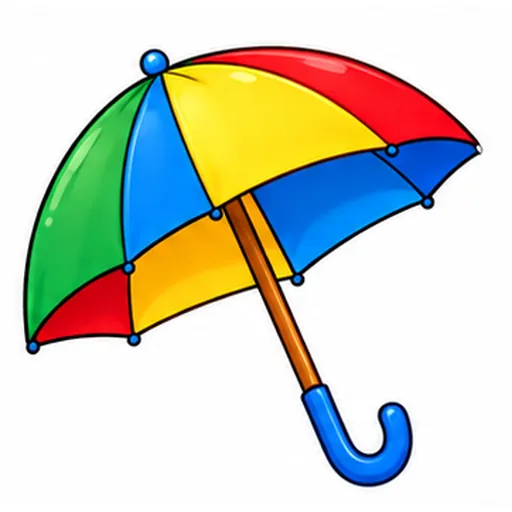
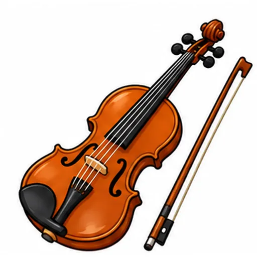
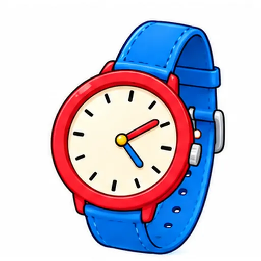
Nhìn hình và chọn từ/cụm từ đúng.
👤 *(phần đầu)*
Đáp án giáo viên xem trong bài nguồn, không hiển thị trước cho bé.
Nghe audio hoặc người lớn đọc, rồi chọn hình/câu trả lời phù hợp.
`👤 / 👀 / 👃 / 👄`
Nghe: **head**
Đáp án giáo viên xem trong bài nguồn, không hiển thị trước cho bé.
h _ a d
1. h _ a d *(head)* 👤
Đáp án giáo viên xem trong bài nguồn, không hiển thị trước cho bé.
B: I can touch my ____________________.
B: I can touch my ____________________.
Đáp án: head
Đáp án giáo viên xem trong bài nguồn, không hiển thị trước cho bé.
B: I can touch my ____________________.
B: I can touch my ____________________.
Đáp án: eyes
Đáp án giáo viên xem trong bài nguồn, không hiển thị trước cho bé.
head
| 1. head | A. 👤 (đầu) |
Đáp án giáo viên xem trong bài nguồn, không hiển thị trước cho bé.
Nhìn hình. Tự nói từ hoặc một câu phù hợp.
👀
Đáp án giáo viên xem trong bài nguồn, không hiển thị trước cho bé.
Nhìn hình. Nói hoặc điền câu trả lời: → ____________________
👤 *(đầu)* → ____________________
Đáp án giáo viên xem trong bài nguồn, không hiển thị trước cho bé.
Các câu chưa có cue cố định được ghi trong mapping. Câu trả lời cá nhân không bị ép Yes/No. Toàn bộ bài luyện gốc được giữ nguyên.